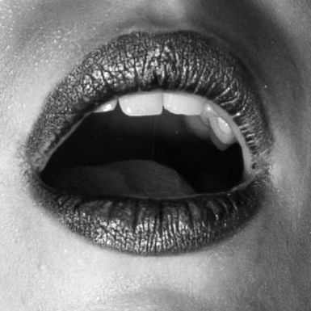

At some point, everything started looking the same, feeling the same, and meaning the same.
Your thoughts stopped being challenged.
You stopped wondering.




Invisible world
As adults, we lose sight of play.
The concept becomes almost alien to us, something we outgrew, or so we believe.
This exhibition is that hidden world of play, the one we stopped seeing.
It exists to remind us that play was never gone, only our perception changed.
If we let play back into our lives, we begin to see it everywhere,
woven into the ordinary, waiting in the everyday.